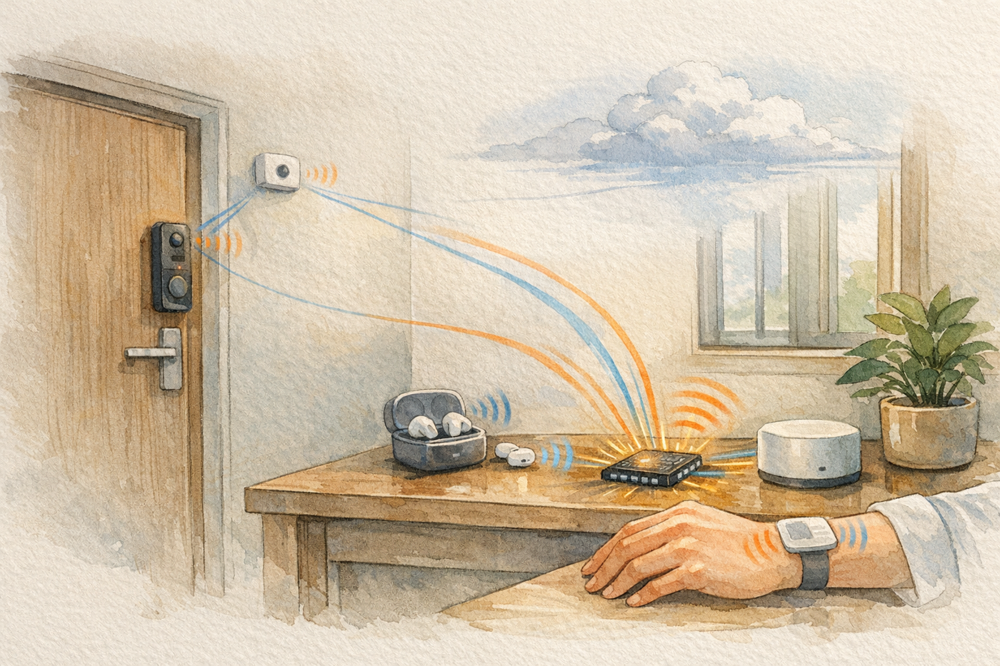
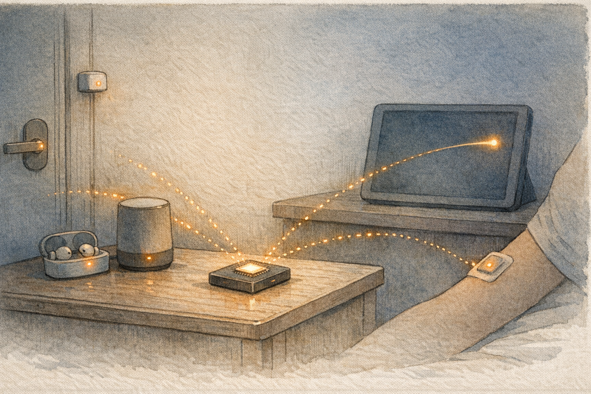
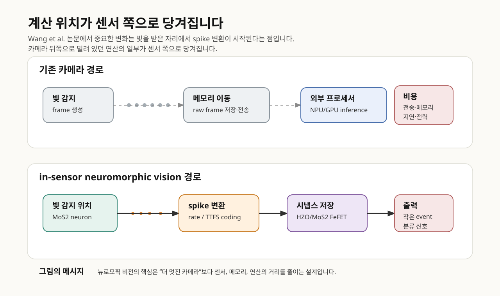
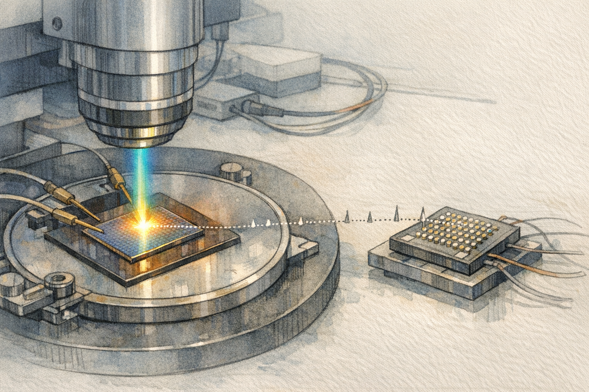
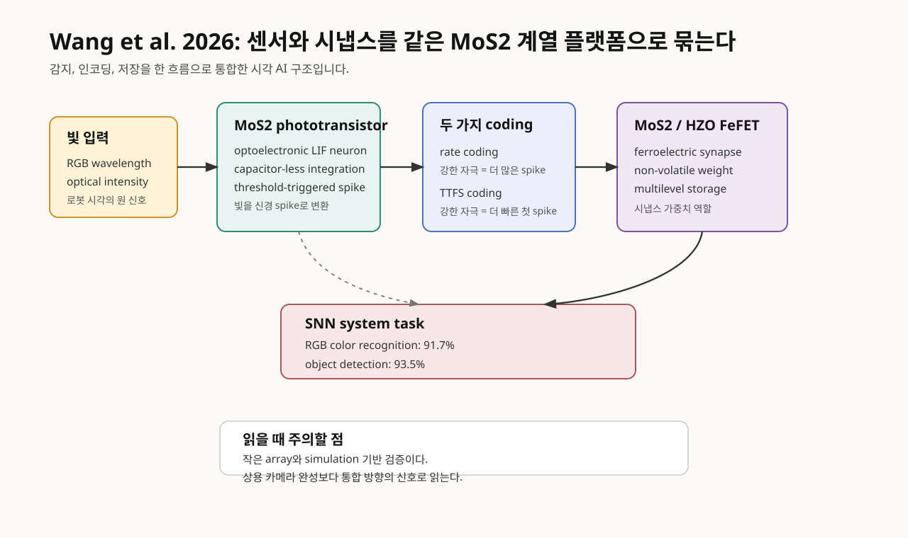
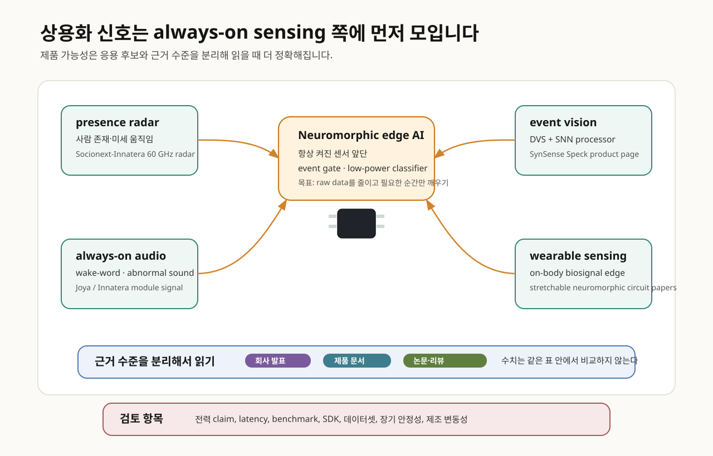
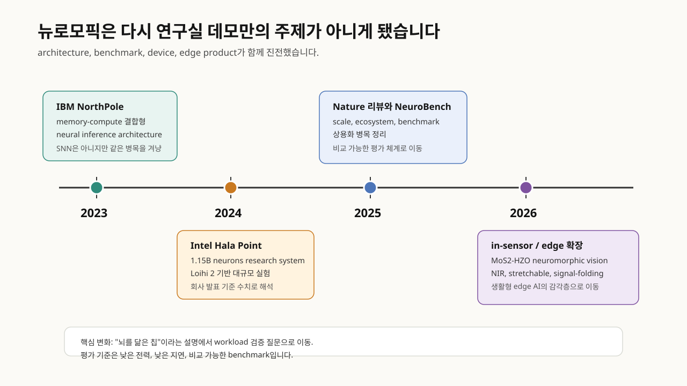

더 가까운 출발점은 우리 주변의 작고 조용한 AI입니다. 사람이 방에 있는지 판단하는 radar sensor, “헤이, …”라는 호출어를 기다리는 오디오 프런트엔드, 사용자의 심박·움직임 변화를 계속 보는 wearable, 불필요한 영상을 밖으로 보내지 않으려는 smart camera가 그렇습니다. 이 제품군은 대형 모델처럼 긴 문장을 만들지 않지만, 실제 제품에서는 훨씬 더 자주 켜져 있고 훨씬 더 오래 기다립니다.
이 제품군에서는 긴 답변 생성보다 오래 기다리는 일이 먼저입니다. 아무 일도 없을 때는 거의 전력을 쓰지 않고, 변화가 생기면 즉시 알아차리고, 필요한 경우에만 더 큰 모델이나 메인 프로세서를 깨워야 합니다. 이때 비용은 모델 파라미터 수보다 센서 데이터 이동, 메모리 접근, 배터리, 프라이버시, 지연 시간에서 나옵니다.
뉴로모픽은 뇌의 신경세포와 시냅스가 신호를 다루는 방식을 참고해, 필요한 순간에만 계산하고 메모리와 연산을 가까이 두려는 하드웨어·알고리즘 접근입니다. 최근 논의의 초점은 “뇌처럼 생각하는 칩”이라는 이미지보다 센서 가까운 곳에서 변화 신호를 먼저 처리하는 방식에 있습니다. 모든 것을 고해상도 데이터로 보낸 뒤 해석하는 구조에서는 배터리, 열, 네트워크, 반응 시간이 동시에 비용으로 돌아옵니다.
사이언스타임즈가 2026년 3월 소개한 기사는 이 문제를 대중 독자에게 소개한 사례입니다. 기사 제목은 “로봇의 눈이 스스로 생각도 하는 뉴로모픽 비전”입니다. 표현은 조금 과감합니다. 그래도 기사가 짚은 문제의식은 중요합니다. 빛이 들어온 자리에서 일부 감지와 계산이 시작된다면, 카메라와 프로세서 사이를 오가는 데이터 이동 비용은 달라질 수 있습니다. 이 리포트는 그 가능성을 생활형 edge AI의 언어로 다시 읽어봅니다.


MoS2 시각 소자
기사에 연결된 논문은 Wang et al.의 Nature Communications 2026 논문입니다. 연구진은 이황화몰리브덴(MoS2) 기반 광트랜지스터를 optoelectronic LIF neuron으로 사용하고, HZO(hafnium-zirconium oxide) 강유전층을 포함한 MoS2 FeFET를 인공 시냅스로 사용했습니다. LIF neuron은 leaky integrate-and-fire neuron의 줄임말입니다. 신호를 조금씩 쌓다가 기준값을 넘으면 spike를 내고 다시 초기화되는 간단한 신경세포 모델입니다.
이 논문에서 먼저 볼 부분은 빛 감지, spike 변환, 가중치 저장을 하나의 플랫폼 안에서 연결했다는 점입니다. 기존 카메라는 빛을 전기 신호로 바꾼 뒤 그 데이터를 별도 프로세서로 보냅니다. 이 연구에서는 센서가 빛의 세기와 파장을 받아 spike train을 만들고, 그 spike가 ferroelectric synapse array의 가중합 연산에 입력됩니다. 카메라와 프로세서 사이의 경계를 센서 쪽으로 옮겨 본 실험으로 해석할 수 있습니다.



논문은 두 가지 encoding을 같이 씁니다. 하나는 rate coding입니다. 빛이 강할수록 일정 시간 안에 spike가 더 많이 나옵니다. 다른 하나는 TTFS(time-to-first-spike)입니다. 자극이 강할수록 첫 spike가 더 빨리 나옵니다. 현관 앞 움직임, 야간 돌봄 카메라, wearable 이상 신호처럼 갑작스러운 변화를 빨리 잡아야 하는 장면에서는 첫 반응 시간이 설계 변수로 떠오릅니다. 반대로 색상과 패턴을 더 안정적으로 구분하려면 spike 빈도도 쓸 만한 정보가 됩니다.
용어를 조금 더 풀어보겠습니다. Spike는 연속적인 숫자 벡터와 달리 짧은 사건 신호입니다. SNN(spiking neural network)은 이런 사건 신호의 시간 패턴을 다루는 신경망입니다. FeFET(ferroelectric field-effect transistor)는 강유전 물질의 분극 상태를 이용해 전도 상태, 즉 가중치에 해당하는 값을 오래 보존할 수 있는 트랜지스터입니다. 이 논문을 따라가면 “카메라가 사진을 찍고 AI가 나중에 보는 방식”에서 조금 벗어나, 빛이 들어온 자리에서 시간 신호와 가중치 연산의 일부가 이미 시작되는 장면을 볼 수 있습니다.
논문은 이 통합 SNN 시스템이 RGB 색상 인식에서 91.7%, 객체 검출에서 93.5%의 정확도를 얻었다고 보고합니다. 사이언스타임즈 기사의 주요 수치도 여기서 나왔습니다. 이 수치는 실험실 규모의 시스템 검증 결과입니다. 상용 smart camera나 wearable vision module의 성능 지표로 읽으려면 array 규모, 에너지 효율, 내구성, 제조 변동성까지 같이 확인해야 합니다. 논문 본문도 현재 하드웨어 한계 때문에 RGB color classification capability를 simulation으로 검증했다고 밝힙니다. 또한 상용 neuromorphic chip과 비교하면서 optoelectronic fusion과 circuit simplification의 장점은 있지만, system scale과 energy efficiency는 아직 개선 영역이라고 적습니다.
이 논문이 남기는 쟁점은 센서와 계산의 경계가 앞으로 어디까지 당겨질 수 있는가입니다. “눈이 스스로 생각한다”는 표현은 과감하지만, 논문의 실제 범위는 이 쟁점에 놓입니다.
항상 켜진 AI의 시간
생활형 AI 관점에서 뉴로모픽이 가장 자연스럽게 들어가는 자리는 “오래 기다리는 센서”입니다. Nature Communications의 2025년 상용화 전망 논문은 초기 시장을 battery-powered system, local compute for IoT, consumer wearable, audio/visual wake phrase, gesture interaction, condition and anomaly detection으로 잡습니다. 이 목록의 공통점은 거대한 추론보다 작은 이벤트를 오래 기다리는 일입니다.
npj Unconventional Computing의 2025년 AIoT 리뷰도 같은 문제를 더 넓게 설명합니다. AIoT, 즉 artificial intelligence of things에서는 sensor node가 단순 수집기 역할을 넘어 일부 계산을 맡는 node가 됩니다. in-sensor computing은 센서 안에서 feature를 만들고, near-sensor computing은 센서 바로 옆에서 데이터를 줄입니다. dynamic vision camera와 silicon cochlea처럼 빛과 소리를 event stream으로 바꾸는 인터페이스도 이 흐름 안에 있습니다.
이 관점에서 뉴로모픽은 “잠복하는 AI”의 설계에 잘 맞습니다. 아무 일도 없을 때는 쉬고, 작은 변화가 생기면 깨어나고, 의미 있는 사건일 때만 더 큰 모델이나 네트워크를 호출합니다. 집 안 presence sensor가 사람의 미세 움직임을 보고, earbuds가 호출어를 기다리고, 손목 패치가 심박 리듬 변화를 감지하고, smart camera가 모든 영상을 클라우드로 보내지 않는 장면에서 이 설계 철학이 바로 체감됩니다.
생활형 AI 활용 가능성
첫째는 스마트홈 presence sensing입니다. 방 안에 사람이 있는지, 움직임이 미세하게 남아 있는지, 넘어짐이나 비정상 움직임이 있었는지를 계속 보는 센서는 배터리와 프라이버시 압박이 큽니다. Socionext-Innatera의 2026년 60 GHz FMCW radar 발표는 human presence detection을 sub-milliwatt power level과 3-6배 battery life extension이라는 회사 claim으로 제시합니다. peer-reviewed benchmark로 확인된 값은 아니므로 본문에서는 회사 발표 claim으로만 다룹니다. 그래도 radar와 neuromorphic edge AI가 만나는 제품 방향은 분명합니다. 카메라 없이 존재와 움직임을 낮은 전력으로 감지하려는 시장입니다.
둘째는 항상 듣는 오디오입니다. wake-word, baby cry, abnormal sound, hearing assistance는 오디오 전체를 계속 저장하거나 클라우드로 보내기 어려운 영역입니다. Baek and Lee의 2024년 SNN sound 리뷰는 sound recognition에서 SNN이 low power와 low latency를 요구하는 embedded real-time application에 맞는 후보라고 정리합니다. Joya Design의 Pulsar 기반 consumer audio module 발표는 evaluation board 단계를 넘어 실제 consumer audio product 쪽으로 뉴로모픽 칩이 들어가는 신호로 읽힙니다. audio SNN은 아직 개발 도구와 데이터셋, 정확도 검증이 더 필요하지만, 항상 듣는 AI의 전력 문제를 설명하기에는 매우 좋은 사례입니다.
셋째는 웨어러블과 on-body computing입니다. 웨어러블 AI는 한 번 멋지게 추론하는 것보다 피부와 손목 위에서 오래 버티는 일이 중요합니다. Nature Electronics의 2026년 stretchable neuromorphic circuit 논문은 on-body edge computing을 위한 stretchable neuromorphic circuit을 제안했습니다. 아직 연구 단계이지만, 생체신호를 센서 가까이에서 전처리하고 분류하려는 흐름은 스마트워치, 패치형 센서, 재활·돌봄 기기와 직접 닿아 있습니다.
넷째는 smart camera와 in-sensor vision입니다. 현관 카메라, 공용공간 모니터링, 저조도 보안 센서, XR 기기의 안쪽 카메라는 모든 frame을 계속 보낼수록 전력과 프라이버시 부담이 커집니다. SynSense Speck처럼 Dynamic Vision Sensor와 SNN processor를 single chip으로 묶는 제품 신호가 나오는 이유도 여기에 있습니다. Wang et al.의 MoS2/HZO 논문은 같은 방향의 더 앞단, 즉 빛을 받은 자리에서 spike와 synapse 계산을 시작할 수 있는지 묻는 재료·소자 연구입니다.
이 네 장면은 공통적으로 “AI를 어디까지 크게 만들 것인가”보다 “언제 큰 AI를 깨울 것인가”를 묻습니다. 뉴로모픽은 대형 모델의 답변 품질을 직접 높이는 기술이 아닙니다. 대신 센서와 배터리, 개인정보가 얽힌 가장 앞단에서 데이터를 덜 만들고, 덜 보내고, 더 빨리 버리는 기술 후보입니다.
초기 상용화 전망
초기 상용화 논의의 중심은 데이터센터 LLM 훈련보다 edge sensing과 always-on inference 쪽에 놓여 있습니다.
Nature Communications의 2025년 상용화 전망 논문은 뉴로모픽을 단일 killer app 탐색으로 좁히지 않고, 어떤 기존 processor와 application을 보강할 수 있는지 살펴보자고 제안합니다. 생활형 AI 제품에서도 같은 구도가 보입니다. 뉴로모픽이 스마트 스피커나 wearable의 전체 지능을 독점한다고 보기 어렵습니다. 가까운 위치는 MCU·DSP·NPU 옆에서 늘 켜진 event gate, wake-up layer, low-power classifier를 맡는 자리입니다.

상용화 논문이 강조하는 또 다른 조건은 programming model입니다. 과거의 SNN application 개발은 뉴로모픽 hardware를 잘 아는 전문가가 직접 network를 설계하는 방식에 가까웠습니다. 이제 surrogate gradient와 gradient-based training, deep learning toolchain과 연결되는 open-source framework가 나오면서, 개발자가 기존 ML workflow에 가깝게 SNN을 만들 수 있는 길이 생기고 있습니다. 제품화 논의에서는 소자의 물리적 효율만큼이나 software API와 benchmark가 중요해집니다.
Nature의 “Neuromorphic computing at scale”도 같은 문제를 봅니다. 대규모 neuromorphic system은 hardware architecture, algorithm, software ecosystem, benchmark, community readiness가 동시에 성숙해야 합니다. NeuroBench가 등장한 이유도 여기에 있습니다. 뉴로모픽 분야는 이제 “이 칩이 뇌처럼 멋지다”에서 “같은 task에서 기존 방법보다 얼마나 낫고, 그 차이를 어떻게 공정하게 잴 것인가”를 더 자주 묻고 있습니다.
Frontiers in Neuroscience의 2025년 비교 리뷰는 edge AI 관점에서 DNN과 SNN을 비교합니다. DNN은 정확도와 개발 도구가 강하지만 계산량과 전력 부담이 큽니다. SNN은 event-driven 방식 덕분에 에너지 효율을 기대할 수 있지만, 학습 도구와 benchmark, 집적 기술은 더 성숙해야 합니다. 이 균형을 놓치면 뉴로모픽 논의가 쉽게 과장됩니다. 매력적인 대안이지만, 결국 도구와 검증 체계가 제품화 속도를 결정합니다.
2026년 5월 공개된 edge-oriented SNN hardware review는 논의를 더 제품 가까운 쪽으로 좁힙니다. 큰 brain-simulation 플랫폼은 작은 edge workload에는 과한 경우가 많고, 실제 제품에 들어갈 small-scale neuromorphic SoC는 아직 희소합니다. 이 리뷰가 SoC integration과 Network-on-Chip communication을 강조하는 배경도 여기에 있습니다. 뉴로모픽의 다음 관문은 대형 데모보다, 100 mW 이하의 extreme edge와 200 mW-2 W급 embedded edge에서 반복 가능한 inference를 어떻게 구현하느냐에 있습니다.
2026년의 연구 방향
Wang et al.의 MoS2/HZO 논문은 2026년 연구 방향 중 하나인 in-sensor neuromorphic vision에 해당합니다. 최근 문헌은 대체로 네 방향에 모입니다.
첫째, 센서 안쪽으로 계산이 들어갑니다. AI-native robotic vision 리뷰는 in-sensor computing을 synaptic, neuronal, hierarchical motif로 나눠 정리합니다. 여기서 중요한 부분은 특정 응용명보다 계산 위치입니다. Synaptic vision은 의미 있는 feature를 강화하고 noise를 줄입니다. Neuronal vision은 analog stimulus를 spike train으로 바꿉니다. Hierarchical vision은 망막처럼 공간 feature를 줄이고 downstream compute 부담을 낮춥니다.
둘째, near-sensor와 in-sensor computing이 AIoT의 기본 설계 과제로 자리 잡고 있습니다. npj Unconventional Computing의 2025년 리뷰는 memory와 logic을 물리적으로 결합하는 in-memory computing, 이벤트 기반 neuromorphic architecture, dynamic vision camera와 silicon cochlea 같은 센서 인터페이스를 같이 다룹니다. 이 문헌에서 뉴로모픽은 단일 칩 이름보다 넓은 edge intelligence 설계 묶음으로 다뤄집니다.
셋째, 재료와 소자 연구가 계속 확장되고 있습니다. Nature Reviews Materials의 2026년 회고는 analogue in-memory computing, physical neural networks, memristor 기반 edge learning을 나란히 언급합니다. 2D material artificial neuron/synapse review와 multisensory neuromorphic devices review는 시각, 촉각, 열, 화학 신호를 하나의 하드웨어가 어떻게 받아들이고 융합할 수 있는지 묻습니다. 스마트홈, 웨어러블, 설비 센서, XR interface로 AI가 내려갈수록 이 논점은 더 자주 돌아옵니다.
넷째, 2026년 논문들은 “눈”만 보지 않습니다. Retinocortical in-sensor neuromorphic vision platform 논문은 NIR, 즉 near-infrared 감도를 갖는 in-sensor neuromorphic vision platform을 제안합니다. Nature Electronics의 signal-folding 논문은 MoS2 기반 compute-in-memory hardware에서 weight precision과 energy efficiency 사이의 trade-off를 줄이려 합니다. Stretchable neuromorphic circuit 논문은 on-body edge computing을 위해 stretchable neuromorphic circuit을 제안합니다. Frontiers in Neuroscience의 Neuromorphic Engineering 최신 목록을 보면 2026년 5월에도 radar gesture recognition, sparse signal classification processor, traffic sign recognition, edge hardware audio processing 같은 응용 논문이 계속 나오고 있습니다.
최근 문헌에서 뉴로모픽은 하나의 소자 명칭으로만 다뤄지지 않습니다. SNN processor, memristor/FeFET compute-in-memory, optoelectronic in-sensor computing, event camera, stretchable OECT array, spintronic neuron이 서로 다른 방향에서 같은 제약을 다룹니다. 공통 제약은 데이터 이동, 전력, 지연, 항상 켜진 sensing, 그리고 physical world와 digital model 사이의 변환 비용입니다.
재료·변동성·데이터 이동
이 대목에서 참고할 만한 배경은 세 갈래입니다. 첫째, 재료와 네트워크 구조가 신호의 상태를 기억하고 변환할 수 있는가. 둘째, analog neuromorphic hardware의 device mismatch를 학습과 보정으로 다룰 수 있는가. 셋째, 센서와 memory, processor 사이의 데이터 이동을 얼마나 줄일 수 있는가. Quanta Magazine이 2017-2022년에 다룬 세 기사는 이 배경을 읽는 보조 자료가 됩니다.
첫째는 재료가 계산에 참여하는 방식입니다. 2017년 Quanta Magazine의 atomic-switch mesh 기사는 UCLA 연구진의 silver nanowire mesh를 소개했습니다. 작은 self-organized network가 artificial synapse처럼 동작하고, 간단한 학습·논리·noise cleanup을 수행한다는 내용입니다. 이 사례는 physical network가 신호의 상태를 보존하고 변환할 수 있다는 재료·소자 논의로 읽힙니다. 2026년의 언어로 바꾸면 memristive network, physical neural network, reservoir computing, in-material computing 계열의 문제입니다.
둘째는 analog hardware의 변동성입니다. 2022년 BrainScaleS-2 관련 Quanta 기사가 다룬 device mismatch가 대표적입니다. 실제 칩의 미세한 소자는 제조 공정 때문에 조금씩 다르고, 이 차이는 디지털 환경에서 학습한 SNN을 하드웨어로 옮길 때 성능을 흔들 수 있습니다. 기사에서 소개한 연구는 SNN이 그 mismatch를 보정하도록 학습해 analog hardware 위에서도 작동할 수 있음을 보였습니다. 같은 요구 조건은 Wang et al.의 MoS2/HZO 논문에도 적용됩니다. 소자 하나가 spike와 synapse를 잘 흉내 내는 것만으로는 부족하고, variability, calibration, training, benchmark가 함께 설계되어야 합니다.
셋째는 데이터 이동 비용입니다. 2022년 NeuRRAM을 다룬 Quanta 기사는 RRAM 기반 analog in-memory chip을 소개하며, NeuRRAM이 3 million memory cells와 hardware neuron을 포함하고 image·speech recognition에서 디지털 컴퓨터와 비슷한 정확도를 내면서 에너지 효율을 높였다는 연구진의 주장을 전했습니다. 이 사례는 strict한 SNN neuromorphic chip과 compute-in-memory, analog AI accelerator 논의를 함께 보게 합니다. 병목은 모델 연산량에만 있지 않습니다. 센서 데이터가 저장되고, 메모리에서 다시 읽히고, processor와 memory 사이를 오가는 과정도 edge AI의 전력과 지연을 결정합니다.
뉴로모픽 논의의 표현은 시기마다 달라졌습니다. 2017년에는 brain-like material network가 눈에 띄었고, 2022년에는 analog neuromorphic chip과 RRAM in-memory AI가 주목을 받았습니다. 2025-2026년에는 edge AI, compute-in-memory, event-based vision, in-sensor computing, low-power sensor intelligence가 같은 기술 관계를 나눠 담고 있습니다. 제품 검토 항목도 그에 맞춰 구체화됩니다. 전력을 얼마나 줄였는가, 지연을 얼마나 낮췄는가, device variability를 어떻게 다뤘는가, 개발자가 쓸 수 있는 software stack과 benchmark가 있는가가 더 자주 등장합니다.
Wang et al.의 MoS2/HZO 논문도 sensing, memory, compute를 가까이 묶으려는 연구 흐름 안에 놓입니다. 기술 경계는 구분해 둘 필요가 있습니다. 모든 analog in-memory chip이나 event camera가 곧장 뉴로모픽으로 분류되는 것은 아닙니다. 다만 제품 관점의 검토 항목은 구체적입니다. 센서 가까운 front-end가 event-driven 처리와 memory-compute 결합으로 전력과 지연을 얼마나 줄일 수 있는가. 그리고 그 효율이 calibration, training, benchmark, software stack의 비용을 견딜 만큼 충분한가.
디스플레이 논의의 이동
몇 년 전에는 뉴로모픽과 차세대 디스플레이를 연결한 논의가 꽤 눈에 띄었습니다. 2025-2026년 문헌에서는 표현의 중심이 “neuromorphic display”에서 in-sensor computing, near-sensor computing, edge AI, wearable interface, AR/VR, smart vision 쪽으로 넓어졌습니다. 디스플레이 단독 시장의 이야기에서 출발한 논의가 센서와 표시 장치, 메모리와 연산을 한 기판이나 한 device stack 안에서 얼마나 가까이 배치할 수 있는가라는 문제로 확장되었습니다.
Advanced Materials의 2024년 intelligent display 리뷰는 storage, processing, light-emitting 기능을 통합하는 neuromorphic display를 차세대 display 병목을 푸는 방향으로 정리했습니다. 당시에는 display가 사람과 기계가 만나는 면이고, 동시에 대면적 박막전자·광전자 소자 플랫폼이라는 점이 강조되었습니다. 기존 display 산업이 가진 TFT backplane, 산화물/유기 반도체, 광검출·발광 소재, 대면적 array 공정 경험이 AI hardware와 만날 수 있다는 기대도 있었습니다.
최근 문헌은 이 주제를 더 넓은 edge device 문제로 다시 다룹니다. National Science Review의 2025년 EP-IDNC 논문은 electrically programmable in-display neuromorphic computing을 제안했습니다. 이 장치는 organic electrochromic platform 안에서 memory, processing, display 기능을 동시에 다루고, noise reduction과 motion object perception을 작은 prototype array로 보였습니다. 같은 저널의 해설은 이 연구가 AR과 wearable electronics로 확장될 수 있다고 보면서도 cycling endurance와 switching speed는 더 개선되어야 한다고 짚었습니다.
최근에 이 논의가 덜 보이는 데에는 몇 가지 이유가 있습니다. 첫째, 뉴로모픽 분야의 응용 pull이 smart vision, radar, audio, wearable, industrial IoT처럼 더 직접적인 edge sensing 문제로 이동했습니다. 최근 시장과 논문 제목에서는 “항상 켜진 센서”와 “낮은 지연”이 더 자주 앞에 나옵니다. 둘째, neuromorphic display는 매력적인 개념이지만 제품화 요구가 까다롭습니다. 화소 균일도, 수명, 색 안정성, switching speed, backplane 통합, 대면적 수율을 동시에 만족해야 합니다. 셋째, AI hardware 담론이 2025년 이후 benchmark, programming model, SoC integration, hybrid edge stack으로 옮겨 가면서 display-specific 용어가 더 넓은 edge AI 논의 안으로 들어갔습니다.
디스플레이 관점은 여전히 의미가 있습니다. 앞으로의 smart display는 단순히 이미지를 보여주는 면을 넘어, 주변 빛과 움직임을 감지하고, 일부 신호를 저장하고, 사람에게 필요한 변화만 낮은 전력으로 보여주는 interface가 될 수 있습니다. 여기서 뉴로모픽의 기술적 자리는 pixel·sensor plane이 더 똑똑한 front-end가 되는 데 있습니다. Wang et al.의 MoS2/HZO 논문도 이 넓은 연구 방향 안에 놓을 수 있습니다. display 산업의 언어로 보면 photodetector, 2D material, ferroelectric layer, array integration이 AI sensing 쪽으로 넘어오는 사례입니다.
움직이는 산업 신호
산업 쪽에서는 연구 플랫폼과 edge 제품 신호가 나란히 나오고 있습니다. 이 부분은 회사 발표와 peer-reviewed 검증을 분리해서 보겠습니다.
Intel은 2024년 Hala Point를 발표했습니다. Intel 발표 기준으로 Hala Point는 1.15 billion neurons, 128 billion synapses, 1,152 Loihi 2 processors를 포함한 research prototype입니다. 최대 전력은 2,600 W로 제시되었습니다. Hala Point는 대규모 뉴로모픽 연구 시스템입니다. billion-neuron scale에서 software와 workload를 실험할 수 있는 플랫폼이라는 의미가 있습니다.
IBM NorthPole은 조금 다른 계열입니다. 기술적 초점은 off-chip memory를 없애고 compute와 memory를 chip 내부에서 엮은 neural inference architecture에 있습니다. IBM은 ResNet50 기준 comparable 12 nm GPU 대비 25배 높은 FPS/W, 5배 높은 FPS/transistor, 22배 낮은 latency를 보고했습니다. 이 결과는 뉴로모픽과 인메모리 AI 하드웨어가 데이터 이동 비용을 줄이려는 같은 문제의식과 닿아 있음을 보여 줍니다.
상용 edge 쪽에서는 Innatera Pulsar가 SNN, RISC-V CPU, CNN/DSP accelerator를 결합한 neuromorphic microcontroller를 내세웁니다. SynSense Speck은 Dynamic Vision Sensor와 SNN processor를 single chip으로 결합한 event-driven vision SoC입니다. BrainChip의 radar reference platform은 Akida neuromorphic intelligence를 radar data classification at the edge에 적용한다고 발표했습니다.
2026년 들어 Innatera 쪽 산업 신호는 더 구체적입니다. Socionext-Innatera 60 GHz FMCW radar 발표는 presence detection을 sub-milliwatt power level과 3-6배 battery life extension이라는 회사 claim으로 제시했습니다. Joya Design의 Pulsar 기반 consumer audio module 발표는 evaluation board를 넘어 실제 제품 설계에 들어가는 사례로 보입니다. Innatera-Synopsys 발표는 설계 자동화, 회로 검증, 시뮬레이션 쪽에서도 뉴로모픽을 edge device 설계 문제로 다루기 시작한 사례입니다.

이 신호들은 공통적으로 거창한 AGI보다 항상 켜져 있고 전력이 제한된 작은 지능을 가리킵니다. smart home, industrial IoT, radar, audio, gesture, wearable이 먼저 등장하는 이유도 여기에 있습니다.

LLM 다음인가, LLM 아래인가
LLM의 전력과 지연 문제가 커질수록 뉴로모픽을 대안 하드웨어로 떠올리는 시선이 생깁니다. 이 직감이 가리키는 실제 문제는 분명합니다. 전력과 지연이 AI의 병목이 되고 있고, 더 큰 모델만으로는 실제 세계의 모든 문제를 해결하기 어렵습니다. 양자 AI보다 빠른 시점에 산업 적용을 검토할 수 있는 대안 하드웨어라는 점에서도 뉴로모픽은 현실적인 선택지가 됩니다.
뉴로모픽의 가까운 역할은 센서 계층에서 먼저 보입니다. 자연어 추론, 긴 문맥, 도구 계획, 복잡한 지식 합성에서는 transformer 계열 모델과 agentic software stack이 여전히 강세를 유지하고 있습니다. 뉴로모픽이 먼저 잘할 일은 그 아래에 있습니다. 센서 신호를 줄이고, 위험 이벤트를 빨리 잡고, 상위 모델을 깨울지 말지 결정하고, 네트워크 없이 현장에서 작동하는 일입니다.
앞으로의 edge AI stack은 한 종류의 지능으로 끝나기보다, 여러 시간 스케일의 지능이 나뉘어 구성될 가능성이 큽니다.
- LLM/agent는 명령 이해, 상황 설명, 계획, 사람과의 대화를 맡습니다.
- NPU/GPU는 고해상도 perception과 큰 모델 inference를 맡습니다.
- 뉴로모픽 edge layer는 항상 켜진 센서 감지, spike/event stream 처리, 빠른 reflex, privacy-preserving preprocessing을 맡습니다.
- 기존 MCU/DSP는 제어, 통신, 시스템 관리를 계속 맡습니다.
이 구도에서 뉴로모픽의 위치는 큰 모델 아래에서 센서 신호를 먼저 줄이는 계층입니다. LLM 이후의 범용 지능 모델로 다루면 현재 연구와 제품 신호를 제대로 설명하기 어렵습니다. 큰 모델의 지능을 부정하지 않고, 그 모델이 실제 세계에서 너무 비싼 방식으로 일하지 않도록 감각 계층을 바꾸려는 접근입니다.
양자 AI와 다른 시계
양자 AI와 뉴로모픽은 다른 시간표를 갖습니다. 양자 컴퓨팅은 특정 최적화, sampling, materials simulation에서 장기적으로 중요한 가능성을 갖습니다. 가까운 제품화 경로는 아직 제한적이고, AI 서비스의 일반적인 edge workload와 바로 맞물리지는 않습니다.
뉴로모픽은 조금 더 가까운 문제를 다룹니다. 이미 event camera, audio wake-word, radar classification, wearable biosignal, industrial anomaly detection 같은 구체적인 workload가 있습니다. Intel, IBM, Innatera, SynSense, BrainChip 같은 회사가 각자 다른 방식으로 산업 신호를 내고 있습니다. Nature 계열 리뷰도 상용화의 가까운 시장을 edge/wearable/IoT로 봅니다. 양자 AI보다 빠른 시점에 edge AI 대안 또는 보조 계층으로 자리 잡을 가능성을 검토할 근거가 있습니다.
과장에는 여전히 경계가 필요합니다. 뉴로모픽이 “AI의 다음 패권”을 혼자 가져간다는 이야기는 아직 근거가 얇습니다. 저는 하이브리드 쪽에 더 무게를 둡니다. sensor-near neuromorphic layer, on-device NPU, cloud/fleet-scale model, agentic software harness가 같이 움직입니다. 한 기술이 전부를 대체하는 그림보다, 각 기술이 전력과 지연, 데이터의 성격에 맞는 자리를 찾는 그림이 현재 자료와 더 잘 맞습니다.
우리에게 남는 검토 항목
뉴로모픽은 논문 주제에 머물지 않고 제품과 공정 검토로 들어옵니다. 디스플레이, 센서, 소재, 제조 장비, 품질 시스템을 가진 조직이라면 제품과 공정 양쪽에서 검토할 지점이 생깁니다.
첫째, 스마트홈, XR, 웨어러블, 저조도 시각, 생체신호, 환경 센서에서는 in-sensor preprocessing이 필요한지 확인해야 합니다. raw data를 모두 보내는 방식이 병목이라면 뉴로모픽 방식을 검토할 이유가 생깁니다.
둘째, 소재와 소자 자산을 살펴볼 필요가 있습니다. MoS2, HZO, IGZO, ferroelectric, memristive device, OECT, stretchable electronics는 서로 다른 기술이지만, AI hardware 관점에서는 memory, sensing, switching, analog state를 다룹니다. 기존 display/sensor 제조 역량이 edge AI hardware와 만나는 지점이 생길 수 있습니다.
셋째, LLM 중심 AI 전략과 별도로 everyday edge intelligence 전략을 따로 둘 필요가 있습니다. LLM이 공정 문서, 실험 기록, 분석 코드, 작업 계획을 돕는다면, 뉴로모픽은 센서와 설비가 만드는 시간 신호를 담당합니다. 두 기술을 단순 경쟁 구도로 묶기보다, 서로 다른 계층으로 읽어야 실무 판단이 흐려지지 않습니다.
뉴로모픽을 보며 저는 “뇌처럼 생각하는 칩이 곧 모든 AI를 바꾼다”는 문장에 머무르지 않으려 합니다. 이 리뷰의 마지막에는 이런 점검문이 남습니다. 우리 제품과 공정에서 너무 늦고, 너무 많이 보내고, 너무 오래 켜져 있어야 해서 생기는 제약은 어디인가. 그 제약이 센서와 시간 신호에 있다면, 뉴로모픽은 지금부터 차분히 검토할 이유가 충분합니다.
작성 정보
- 작성자: 김현중 with Codex Agent | AI Governance Team
- 작성일: 2026-06-05
- 업데이트: 2026-06-16
- 추가 업데이트: 2026-06-17
- 생활형 edge AI 재작성: 2026-06-21
- 시각자료 재설계: 2026-06-23
- 작성 형식: AI Tech Review Letters
- 검토 범위: ScienceTimes 기사, Nature Communications 대상 논문, 2017-2022년 과학 저널리즘의 뉴로모픽 장기 관찰 자료, 2025-2026년 뉴로모픽 리뷰/벤치마크/상용화 자료, 2026년 edge-oriented SNN 및 multisensory neuromorphic review, 2026년 6월 스마트홈·오디오·웨어러블·smart camera edge neuromorphic 산업 신호, intelligent display 및 in-display neuromorphic computing 문헌
- 이미지: OpenAI
imagegenillustration 3장, deterministic SVG 설명도 6장 - 검증 상태: 생활형 edge AI 관점의 source refresh, Korean prose audit, artwork/figure revision, HTML rendering, dist package regeneration, public site publish 대상으로 업데이트
References
직접 검증 참고자료
- ScienceTimes, 로봇의 눈이 스스로 생각도 하는 뉴로모픽 비전, 2026-03-04
- Wang et al., Homogeneous integration of two-dimensional material-based optoelectronic neurons and ferroelectric synapses for neuromorphic vision, Nature Communications, 2026
- Kudithipudi et al., Neuromorphic computing at scale, Nature, 2025
- Muir and Sheik, The road to commercial success for neuromorphic technologies, Nature Communications, 2025
- Yik et al., The neurobench framework for benchmarking neuromorphic computing algorithms and systems, Nature Communications, 2025
- Chowdhury et al., Neuromorphic computing for robotic vision: algorithms to hardware advances, Communications Engineering, 2025
- Goswami, Reflections on the past decade of neuromorphic computing, Nature Reviews Materials, 2026
- Kim et al., AI-native robotic vision systems enabled by in-sensor computing, npj Unconventional Computing, 2026
- Edge intelligence through in-sensor and near-sensor computing for the artificial intelligence of things, npj Unconventional Computing, 2025
- Zhu et al., Bio-inspired optoelectronic devices and systems for energy-efficient in-sensor computing, npj Unconventional Computing, 2025
- Gunawardana et al., Neuromorphic architectures for edge-oriented spiking neural networks: A review, Journal of Systems Architecture, 2026
- A comparative review of deep and spiking neural networks for edge AI neuromorphic circuits, Frontiers in Neuroscience, 2025
- Kim et al., A Review on Memristor-Based In-Sensor Computing for Neuromorphic and Edge Intelligence, Nano Energy, 2026
- Baek and Lee, SNN and sound: a comprehensive review of spiking neural networks in sound, Biomedical Engineering Letters, 2024
- Liu et al., Dedicated and Reconfigurable Artificial Neurons and Synapses based on Two-Dimensional Materials for Efficient Neuromorphic Application, Nano-Micro Letters, 2026
- Multisensory Neuromorphic Devices: From Physics to Integration, Nano-Micro Letters, 2026
- Tong et al., Signal-folding-based neuromorphic hardware for energy-efficient computing, Nature Electronics, 2026
- Li et al., A large-scale stretchable neuromorphic circuit for on-body edge computing, Nature Electronics, 2026
- An et al., Retinocortical in-sensor neuromorphic vision platform for NIR-augmented artificial vision, Nature Communications Article in Press, 2026
- Frontiers in Neuroscience, Neuromorphic Engineering latest articles
- Quanta Magazine, A Brain Built From Atomic Switches Can Learn, 2017
- Quanta Magazine, AI Overcomes Stumbling Block on Brain-Inspired Hardware, 2022
- Quanta Magazine, New Chip Expands the Possibilities for AI, 2022
- Zhang et al., Toward Intelligent Display with Neuromorphic Technology, Advanced Materials, 2024
- Dai et al., Electrically programmable organic in-display neuromorphic computing, National Science Review, 2025
- An all-in-one electrochromic neuromorphic display, National Science Review, 2025
산업 신호와 배경자료
- Intel, Hala Point announcement, 2024
- IBM Research, NorthPole Science paper page, 2023
- Innatera, Pulsar at CES 2026 announcement
- Socionext and Innatera, 60 GHz FMCW radar and neuromorphic edge AI for human presence detection, 2026
- Innatera and Joya Design, Pulsar-powered consumer audio module, 2026
- SynSense Speck product page
- BrainChip Radar Reference Platform, 2026
- Synopsys, Innatera Selects Synopsys Simulation to Scale Brain-Inspired Processors for Edge Devices, 2026-03-02